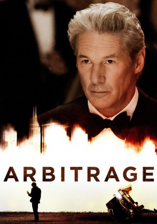

#2314 Arbitrage: Der Preis der Macht
Alternativ: Arbitrage
 
 IMDB-Wertung: 6.6 / 10
IMDB-Wertung: 6.6 / 10  Metascore: 73
Metascore: 73 
Robert Miller scheint zu seinem 60. Geburtstag alles im Leben erreicht zu haben, was man sich wünschen kann. Er ist ein erfolgreicher Hedgefonds-Manager in New York und dazu noch liebender Ehemann und Familienvater. Doch hinter diesem glitzernden Schein droht sein berufliches Erbe zusammenzubrechen. Er versucht verzweifelt sein Trading-Unternehmen an eine große Bank zu verkaufen, bevor Tricksereien und Betrug an den Tag kommen, mit denen er jahrelang seine Geschäfte gedeckt hat.
Jahr: 2012
Dauer: 107 Minuten
FSK: 12
Land: USA Studio: LionsgateTonspuren: DTS - ,
Untertitel: Deutsch,
Auflösung: 1080p (1920x1040) Größe: 8386 MB
Genre: Drama, Thriller
Regisseur: Nicholas Jarecki
Drehbuch: Nicholas Jarecki
Soundtrack: Cliff Martinez
Darsteller:
 Richard Gere als Robert Miller
Richard Gere als Robert Miller Susan Sarandon als Ellen Miller
Susan Sarandon als Ellen Miller Tim Roth als Det. Michael Bryer
Tim Roth als Det. Michael Bryer Brit Marling als Brooke Miller
Brit Marling als Brooke Miller- Laetitia Casta als Julie Côte
 Nate Parker als Jimmy Grant
Nate Parker als Jimmy Grant Stuart Margolin als Syd Felder
Stuart Margolin als Syd Felder- Chris Eigeman als Gavin Briar
 Graydon Carter als James Mayfield
Graydon Carter als James Mayfield Bruce Altman als Chris Vogler
Bruce Altman als Chris Vogler Larry Pine als Jeffrey Greenberg
Larry Pine als Jeffrey Greenberg Curtiss Cook als Det. Mills
Curtiss Cook als Det. Mills Reg E. Cathey als Earl Monroe
Reg E. Cathey als Earl Monroe Felix Solis als A.D.A. Deferlito
Felix Solis als A.D.A. Deferlito Tibor Feldman als Judge Rittenband
Tibor Feldman als Judge Rittenband- Austin Lysy als Peter Miller
- Monica Raymund als Reina
- Gabrielle Lazure als Sandrine Côte
- Shawn Elliott als Flores
- Sophie Lane Curtis als Ava Stanton
- Maria Bartiromo als Maria Bartiromo
- David Faber als CNBC Newscaster
 Josh Pais als John Aimes
Josh Pais als John Aimes- Paul Fitzgerald als Paul Barnes
- Evelina Turen als Julie's Assistant
- Alyssa Sutherland als Jeffrey's Receptionist
- Paula Devicq als Cindy
- Io Bottoms als Mae
- Zack Robidas als Tom
 Betsy Aidem als Vogler's Secretary
Betsy Aidem als Vogler's Secretary Sam Kitchin als Brent
Sam Kitchin als Brent- Jennifer Lee Crowl als Receptionist
- Quinn Friedman als Grandchild #1
- Angel Picard-Ami als Woman in Gallery
- Jamie Johnson als Julie's Suitor
 Jennifer Butler als Trader , uncredited
Jennifer Butler als Trader , uncredited- Julie Cavaliere als Four Season Patron , uncredited
- Fabrizia Dal Farra als Event coordinator , uncredited
- Marshall Factora als Funeral Director , uncredited
- Pete Fasanelli als Bartender , uncredited
- William Friedkin als Jeffrey , uncredited
- Darryl Reuben Hall als Financial Trader , uncredited
- Rachel Heller als Rachel , uncredited
- Alex Kruz als Four Seasons Wealthy Patron , uncredited
- Nicole Roderick als Friend of Julie Cote , uncredited
- Jenny Rostain als Gala Guest , uncredited
- Harlan J. Strauss als Grand Jury Foreman , uncredited
 Barbara Vincent als Four Seasons Patron , uncredited
Barbara Vincent als Four Seasons Patron , uncredited- Paul Weaver als Bar patron , uncredited
- Ted Neustadt als Ben
Datei: X:\2012(A-F)\Arbitrage Der Preis der Macht (2012, FSK12, 1920x1040).mkv seit 29.10.2015
Festplatte: HD 2012(A-M)
 Es gibt insgesamt 102 Filme in der Gruppe '2012(A-F)'
Es gibt insgesamt 102 Filme in der Gruppe '2012(A-F)'